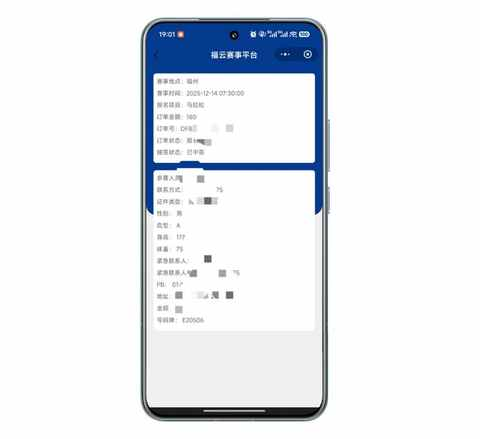
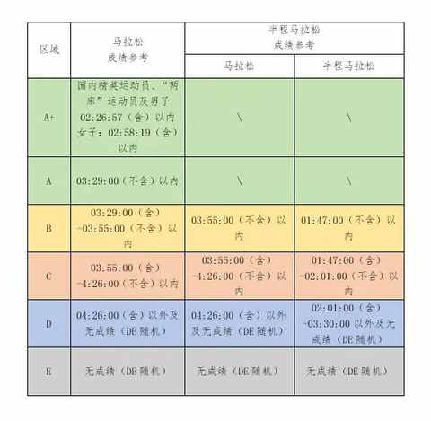
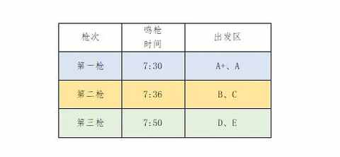
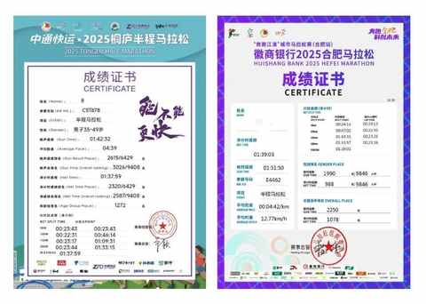
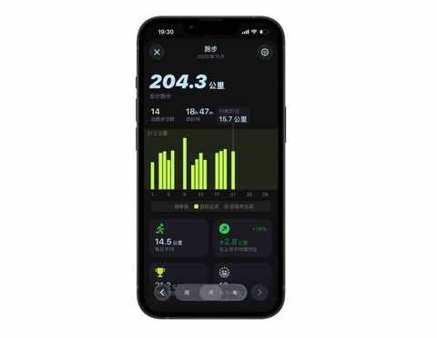
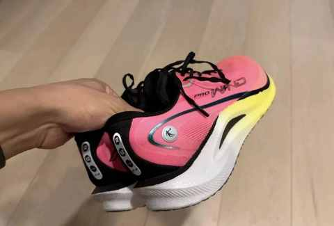
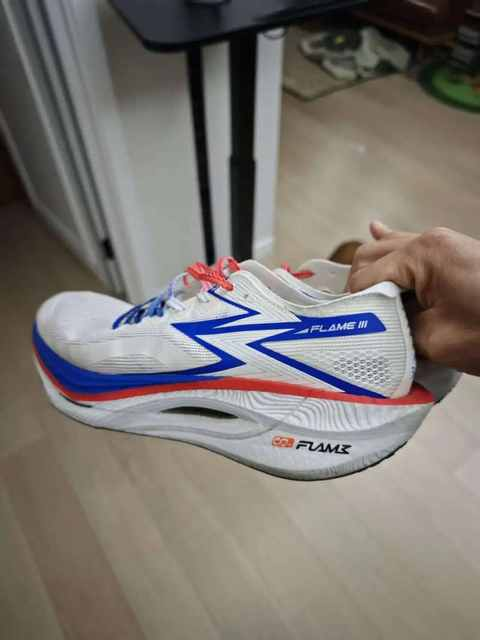
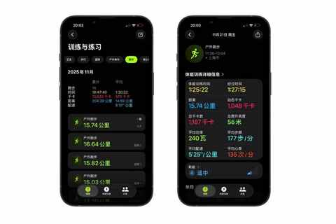

90 年，35 岁，E区出发，即将在福州解锁首全马
一、再次从 E 区出发
和 11 月初的合肥半马一样，因为分区之前没有 A 级赛事的成绩，被分到 E 区。

这意味着在前 10km 是密密麻麻的人，需要用闪转腾挪，见缝插针的跑法，让自己尽快跑出人流。

分区规则很清晰的表达了分区的逻辑，主要以成绩来划分，无成绩的 DE 随机。

从鸣枪的时间能看出来，这次 DE 区的人数众多，比第一枪晚20 分钟，比第二枪晚 14 分钟。
这样挺好，早上能晚起 20 分钟，多眯一会儿也不错。
二、备赛情况
最近这两个月一直在认真备赛，首场全马是一件值得去努力的事情。
1️⃣ 两场半马比赛： 已完赛
分别是 10 月 26 日的桐庐半马 和 11 月 9 日的合肥半马，两场比赛都跑进 140，赛道差别挺大但输出的较为稳定。

去外地跑一次马拉松，需要花多少钱？这份真实账单给你参考
2️⃣ 11 月跑量破 300km：进行中
目前 11 月还有 9 天，已完成 204km，还有 96km 要在剩下的 9 天里面跑完。
按照目前跑五休二的节奏，保守估计还要跑 6 次，其中有一次是 30km的长距离，最迟 30 号能完成目标。

3️⃣ 跑鞋选择：飞燃 3
虽然之前两场半马都是穿的乔丹的鞋，是去年买的强风 2Pro。

选飞燃 3 的原因主要是稳定性不错，最关键的是穿这个鞋我快不起来！

能让我在前 10km 不用离过猛，很利于我顺利完赛，在后半程保持稳定输出。
三、首全马的完赛目标
既然是比赛，总得有一个目标，特别是像我这种首次跑全马的新人，第一次的成绩也涉及到后面参加比赛的分区情况。
1️⃣ 保底目标：破 4
跑进 4 小时，对应的配速为 540
2️⃣ 理想目标： 冲击 330
跑进 330，对应的配速为 457
上面的两个小目标，都是建立在安全完赛的基础上的，如果有出现不适，调整之后无明显效果的话，这两个小目便自动标顺延到下次全马比赛。

最近的单次跑步时间有对应调整，从之前的单次 60-70 分钟拉到 80 分钟以上，里程 15km 以上，体感上不错。
是否能完成小目标其中的一个，也看接下来 30km 长距离的体感和跑之后的恢复情况。
当然啦，最重要的还是当天跑的时候的状态如何。
12月14日，我们福州赛道见！
近期文章
嘿！还记得“为QQ等级挂机”的岁月吗？来晒晒你的等级吧！
11 个月，开极氪7X跑两万公里，用车总结及好物分享
中年人的3年闲鱼实战，真实经验分享：这5类物品买二手，能轻松省下40%
一个长居省外中年人的合肥印象：记2025的年第4次合肥行
中年减肥成功2年后，才发现运动形式真不重要，守住这3点才能不反弹！
我的两个配图利器：两个APP强强联合，实现1+1 > 2的视觉升级
中年初跑者增加跑量两个月后，对如何选跑鞋有了 3个新思考
别慌！和所有Intel版Mac用户共享：3个让我们继续用的理由和2个续命秘籍
老车主看了极氪7X的焕新版之后：情绪稳定！
中年减肥成功2年后，才发现这5个坑当初要是有人点醒我该多好！
中年减肥成功2年后，才发现维持体重靠的不是毅力，而是这5个微习惯